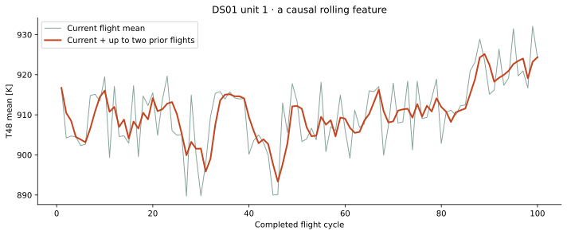
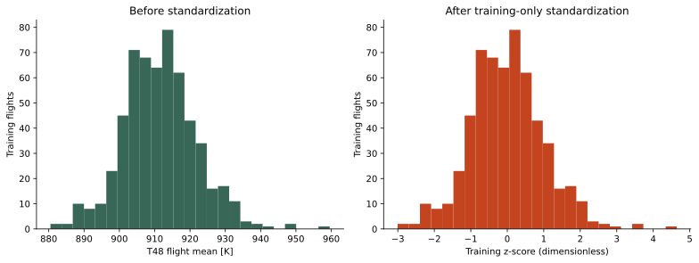
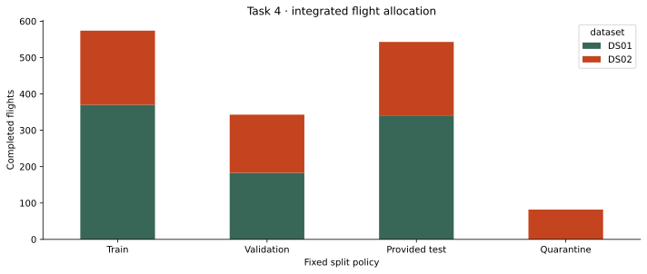

A moment in flight
Altitude, speed, temperature, pressure and fuel flow describe what the engine is doing under particular operating conditions.
TASK 04 / DATA PREPARATION
From millions of snapshots
to one clear flight entry.
Before a model learns, we decide what it may see. Here is how we clean, summarize, split, and version the engine data.
A raw row is a snapshot. A prepared row summarizes a completed flight. An engine history puts those flights in order.
Altitude, speed, temperature, pressure and fuel flow describe what the engine is doing under particular operating conditions.
Means, variation, and earlier-flight changes become inputs available at the end of the current flight.
Historical RUL says how many flight cycles remained. It stays separate from the inputs, so the model cannot see the answer.
| Entry type | Use |
|---|---|
| Operating conditions W | 4 channels: describe the mission context |
| Measured sensors X_s | 13 channels: pressures, temperatures, flows and shaft speeds |
| P2 | Excluded while its definition/unit is unresolved |
| Unit and cycle | Order/group metadata, not predictors |
| Flight class | Coverage diagnostics only |
| DS01 / DS02 | Source identity encoded as two categorical indicators |
| RUL | Target y, separate from feature matrix X |
| Hidden simulator T / X_v / hs | Excluded from the sensor-based candidate representation |
Simulation responses driven by realistic flight profiles are not observations of real engine failures. An ID stored as a number is still a label. Absolute Rankine temperatures become Kelvin, not Celsius.
Preparation decides what a model may learn from. It does not establish how accurately that model will predict.
0 non-finite and 0 impossible selected predictor values found. 0 readings deleted. Rare finite values remain; inconsistent keys or labels stop the pipeline.
Altitude in metres, temperatures in Kelvin, pressures in kPa, fuel flow in kg/s. Raw files keep their original values.
17 channel means + 17 spreads + a reading count. Whole-flight averages are manageable; they still mix mission phases.
Three trailing means and three previous-flight changes use current or earlier flights. Four physical combinations add diagnostic candidates.
57 expected gaps occur in first-flight differences. Training medians fill them; three extra indicators retain that information.
Two source-category indicators. Numeric features and missingness indicators use training means and scales only. No target or engine ID enters X.
Was the temperature high? Did it vary? Has it changed since the previous flight? Every candidate has an explicit formula.

| Feature | Unit | Meaning |
|---|---|---|
| alt_m_mean | m | Mean of finite readings in the current completed flight |
| alt_m_std | m | Sample standard deviation of finite readings in the current flight (ddof=1) |
| Mach_mean | dimensionless | Mean of finite readings in the current completed flight |
| Mach_std | dimensionless | Sample standard deviation of finite readings in the current flight (ddof=1) |
| TRA_pct_mean | % | Mean of finite readings in the current completed flight |
| TRA_pct_std | % | Sample standard deviation of finite readings in the current flight (ddof=1) |
| T2_K_mean | K | Mean of finite readings in the current completed flight |
| T2_K_std | K | Sample standard deviation of finite readings in the current flight (ddof=1) |
| T24_K_mean | K | Mean of finite readings in the current completed flight |
| T24_K_std | K | Sample standard deviation of finite readings in the current flight (ddof=1) |
| T30_K_mean | K | Mean of finite readings in the current completed flight |
| T30_K_std | K | Sample standard deviation of finite readings in the current flight (ddof=1) |
| T48_K_mean | K | Mean of finite readings in the current completed flight |
| T48_K_std | K | Sample standard deviation of finite readings in the current flight (ddof=1) |
| T50_K_mean | K | Mean of finite readings in the current completed flight |
| T50_K_std | K | Sample standard deviation of finite readings in the current flight (ddof=1) |
| P15_kPa_mean | kPa | Mean of finite readings in the current completed flight |
| P15_kPa_std | kPa | Sample standard deviation of finite readings in the current flight (ddof=1) |
| P21_kPa_mean | kPa | Mean of finite readings in the current completed flight |
| P21_kPa_std | kPa | Sample standard deviation of finite readings in the current flight (ddof=1) |
| P24_kPa_mean | kPa | Mean of finite readings in the current completed flight |
| P24_kPa_std | kPa | Sample standard deviation of finite readings in the current flight (ddof=1) |
| Ps30_kPa_mean | kPa | Mean of finite readings in the current completed flight |
| Ps30_kPa_std | kPa | Sample standard deviation of finite readings in the current flight (ddof=1) |
| P40_kPa_mean | kPa | Mean of finite readings in the current completed flight |
| P40_kPa_std | kPa | Sample standard deviation of finite readings in the current flight (ddof=1) |
| P50_kPa_mean | kPa | Mean of finite readings in the current completed flight |
| P50_kPa_std | kPa | Sample standard deviation of finite readings in the current flight (ddof=1) |
| Nf_rpm_mean | rpm | Mean of finite readings in the current completed flight |
| Nf_rpm_std | rpm | Sample standard deviation of finite readings in the current flight (ddof=1) |
| Nc_rpm_mean | rpm | Mean of finite readings in the current completed flight |
| Nc_rpm_std | rpm | Sample standard deviation of finite readings in the current flight (ddof=1) |
| Wf_kg_s_mean | kg/s | Mean of finite readings in the current completed flight |
| Wf_kg_s_std | kg/s | Sample standard deviation of finite readings in the current flight (ddof=1) |
| n_readings | readings | Number of ordered readings in current flight; proxy for observed flight length, not verified seconds |
| T48_K_trailing3 | K | Mean of current and up to 2 previous flight means, within the same history |
| T48_K_delta_prev | K | Current flight mean minus previous flight mean; missing on first observed flight |
| Nc_rpm_trailing3 | rpm | Mean of current and up to 2 previous flight means, within the same history |
| Nc_rpm_delta_prev | rpm | Current flight mean minus previous flight mean; missing on first observed flight |
| Wf_kg_s_trailing3 | kg/s | Mean of current and up to 2 previous flight means, within the same history |
| Wf_kg_s_delta_prev | kg/s | Current flight mean minus previous flight mean; missing on first observed flight |
| lpc_pressure_ratio | dimensionless | P24 mean / P21 mean, both total pressures |
| burner_to_lpt_pressure_ratio | dimensionless | P40 mean / P50 mean; diagnostic ratio, not calibrated efficiency |
| hpt_to_lpt_temperature_drop_K | K difference | T48 mean minus T50 mean; diagnostic temperature difference |
| core_to_fan_speed_ratio | dimensionless | Nc mean / Nf mean; diagnostic shaft speed ratio |
A smaller 20-column baseline selection is also exported. Extra features are candidates to validate later, not evidence of improved prediction.

An ID appears in test in one collection and development in the other.
DS01 unit 10 is provided test; DS02 unit 10 is provided development. Independence is unresolved. We conservatively link equal IDs and retain the 82 DS02 flights outside training, validation and scoring.
Validation IDs 5, 6 and 18 are fixed by policy, not chosen using performance. Other eligible development histories are training. The supplied test histories remain test.

| Subset | Original partition | Prepared split | Flights | Histories | Original readings |
|---|---|---|---|---|---|
| DS01 | dev | train | 370 | 4 | 2789639 |
| DS01 | dev | validation | 183 | 2 | 2116997 |
| DS01 | test | test | 341 | 4 | 2735232 |
| DS02 | dev | quarantine_test_related | 82 | 1 | 952711 |
| DS02 | dev | train | 204 | 3 | 2386597 |
| DS02 | dev | validation | 160 | 2 | 1924139 |
| DS02 | test | test | 202 | 3 | 1253743 |
Conservative grouping reduces a known risk; it does not prove complete independence. Task 3 test exposure is documented. Later grouped cross-validation must refit preprocessing inside each training fold.
Original HDF5 files stay unchanged. Versioned CSVs, aligned labels and metadata, and fitted preprocessing stay local.
| Stage | Row meaning | Rows | Representation |
|---|---|---|---|
| Raw | One ordered reading | 14159058 | 47 stored fields; six aligned blocks |
| Prepared | One completed flight | 1542 | 45 physical/history features + metadata + RUL |
| Train | One completed flight | 574 | 50 finite model inputs; target separate |
| Validation | One completed flight | 343 | 50 finite model inputs; target separate |
| Test | One completed flight | 543 | 50 finite model inputs; target separate |
| Quarantine | One completed flight | 82 | Retained; no fitting, validation, or test scoring |
READ · RUN · EXPLAIN
Run the guided notebook or python scripts/prepare_data.py. Rebuild this page/report with python scripts/build_task4_report.py. No prediction model is trained here.
Only a few engine groups, phase mixing, collection effects and unresolved cross-subset independence limit conclusions. Source version/terms still need confirmation. The candidate features are not validated indicators of wear.
Next: fit a transparent baseline, compare simple regressors with development-engine validation, then evaluate final test. Report MAE/RMSE in flight cycles and per-engine errors. No operational aviation suitability or measured savings is claimed.
Task requirements: supplied Project Tasks V4.0 PDF, p. 2, dated 26 October 2026. More context: Task 3 findings, AI assistance disclosure, and the official scikit-learn sources linked in the report.